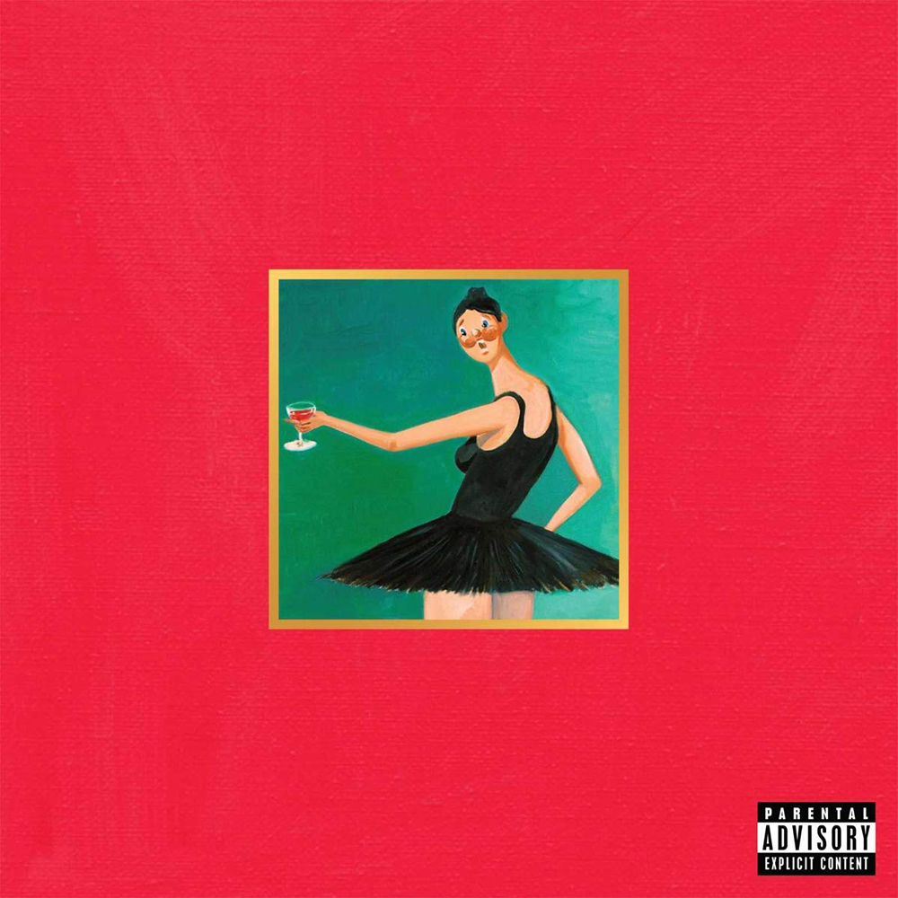

My Beautiful Dark Twisted Fantasy by Kanye West

Ingredients
- Absolute Chaos
- Genious Samples
- A spoonfull of anarchy
Steps
- Add to a bowl that King Crimson Sample in Power...
- Mix in the goosebump inducing All of the lights
- Grease the second side with the song of a century in Devil in a New Dress
- Serve piping hot with Who will survive in America
Back to the index...